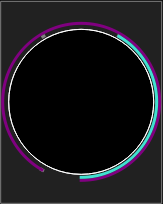

The DMX Monitor is a useful tool to track the values that are being sent to the
output universes. Only the information related to the required fixtures are
displayed. The monitor's display options have no effect on actual fixture
addressing, after all, it is just a monitor.
The DMX monitor has two display modes: DMX view and 2D view.
The DMX view shows the all the fixtures of the project, representing each channel with numbers and icons. It basically represents each channel in 3 rows:
| 2D View | By clicking on this button, it is possible to switch to the 2D view mode. |

|
Change the monitor font. To prevent the numbers from flickering and jumping, you should choose a proportional (i.e. fixed width) font; for example Monaco, Andale or Courier. The font property is global, meaning it will not be saved into your current project, but it will be stored in the QLC+ main configuration. |
| DMX Channels | Display fixtures' channel numbers as absolute DMX channels; channel numbers go from 1 to 512 as they are assigned to each fixture. |
| Relative Channels | Display fixtures' channel numbers relative to fixtures i.e. every fixture's channel numbers always start from 1. |
| DMX Values | Display channel values as absolute DMX values (0-255). |
| Percent Values | Display channel values as percentages of 255 (0-100%). |
| Universe | Select which universe to monitor. The first entry is always "All universes" |
The monitor 2D view is another way to represent the fixtures of your project that, instead of numbers, uses a graphical preview trying to represent as much as possible the real result of a light-emitting device.
Currently, monitor reflects:
In 2D view mode it is possible to select which fixtures to display and their
position in a grid representing the dimensions of a real stage.
The grid would like to reproduce the front view of a stage, but you can
use it as a generic space as you might like.
Graphical items can be manually moved by dragging them over the grid, or,
when clicked, they can be configured with the Monitor Fixture Editor
panel that will be displayed on the right side of the window.
| DMX View | By clicking on this button, it is possible to switch to the DMX view mode. |
| Grid dimensions | Set the width and the height of the 2D view grid by changing the values displayed in the two spin boxes |
| Grid units | Set the 2D view grid measurement units by selecting the desired one from the drop down menu. Possible options are meters and feet. |
 |
Add a fixture to the 2D view grid. When clicking on this icon, the fixture selection dialog will be displayed. Fixtures already added to the view will be greyed as it isn't possible to add the same fixture twice |
 |
Remove a fixture from the 2D view grid. Clicking on this icon will remove the currently selected fixture. A fixture is highlighted in yellow when selected. |
 |
Open the Monitor background picture selection dialog. Here it is possible to choose between 3 possible modes:
buttons to add/remove Functions and their
associated background picture to the Monitor. When a Function in this list will start
the Monitor 2D view background picture will change accordingly.
|
 |
Show/hide fixtures' names underneath their graphical representation |
When a fixture is clicked, it gets highlighted in yellow and
the Monitor Fixture Item Editor is displayed on the right side
of the window.
Following, the possible parameters that it is possible to tune:
| Horizontal position | Set the position on the grid X axis using the grid measurement units |
| Vertical position | Set the position on the grid Y axis using the grid measurement units |
| Rotation | Set the rotation angle of the graphical item representing the selected fixture |
| Color gel | Set the color gel to be applied to the currently selected fixture item. This is useful for generic dimmers with a traditional light bulb, not emitting any color by itself. This function has no effect on RGB LED fixtures. |
 |
Reset a previously set color gel |
PAN/TILT display is schematically displayed using colored rings/arcs around fixture. Purple arc shows PAN angle, and Turquoise arc shows TILT angle. Gray dots show PAN/TILT ranges. Zero (middle of the range) is at the bottom.
In the folowing picture PAN range is 660 degrees and tilt range is 300 degrees. Pan is at counter-clockwise end (-330 deg) and tilt is at -150 deg.
